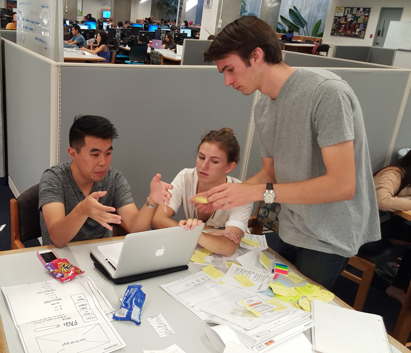
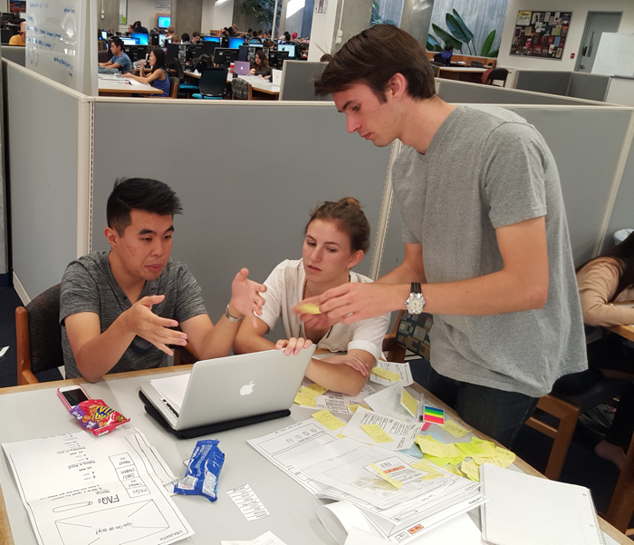

CodeSketch
01. Problem Space
How might we allow designers and coders to more easily connect to work on software based projects?
In the course of ten weeks, myself and 5 others aimed to create an online platform that allows coders and designers to connect with each other and join or start their own projects.
02. Research
Using a combination of interviews and competitive analysis, we gained insight into what coders expect from designers, and vice versa. We also found that many people had difficulty finding people to work with who were outside their own discipline. proceeded to collect data.
03. Design Objectives + Challenges
Challenge: Content Curation. What’s most important to our users? We honed in on a specific target audience to improve their user experience. For example, we were considering designing for people with app ideas, but decided to focus on the coders and designers to provide a better user experience. Creating a minimalistic UI that’s simple for the user required cutting down on features. For example, during user research, we found that we had far too many input fields required to make a profile, so we had to figure out what was most important to our users to narrow it down.
Challenge: Searching for Teammates and Projects How do people go about searching for teammates and projects? What are they looking for? What criteria can we focus on to make their search as effortless as possible?
04. Prototyping
We put our paper prototypes in front of people and gave them a task. After collecting their feedback and a few design iterations, we developed high fidelity clickable prototypes on Axure that our developers were able to turn into working pages.
OUR BLOG 
